TP2 de Statistique
Nicolas Makaroff
01/03/2019
1 - Théorème Central Limite et Estimation de Monte Carlo
Avant-propos
Pour la suite de l’exercice, on définit trois fonctions permettant d’une part pour un vecteur donné de calculer la moyenne empirique et la variance empirique, et d’autre part pour une loi donné de créer un échantillon de taille \(N=1000\).
N<-1000
n<-c(5,30,100)
#Fonction calculant la moyenne empirique pour un vecteur donné
moy_empirique <- function(vecteur){
sum<-0
for (i in vecteur){
sum<-sum + i
}
return (sum/(length(vecteur)))
}
#Calcul de la variance emmpirique pour un vecteur donné
var_empirique <- function(vecteur){
moy<-moy_empirique(vecteur)
sum<-0
for (i in vecteur){
sum <- sum + (i-moy)*(i-moy)
}
return ( sum/(length(vecteur)-1))
}On introduit aussi une fonction permettant de calculer la moyenne empirique sur un échantillon en fonction de n’importe quelle loi et compare avec la loi normale.
1.1 Simulation de 1000 échantillon i.i.d Gaussien
gen_echan_gauss <- function(n,N,mu,sigma){
x <- rnorm(n,mu,sigma)
aleatoire <- function(x1,n1){
y <- sample(x1,n1,replace=TRUE)
moy_sd <- c(moy_empirique(y),var_empirique(y))
return(moy_sd)
}
result <- sapply(1:N,function(w) aleatoire(x,n))
return(result)
}
hist_mul <- function(n){
for (i in n){
hist(gen_echan_gauss(i,N,1,2)[1,],breaks=i)
t <- seq(-10,10,by=0.5)
x <- dnorm(t,1,2)
par(new=TRUE)
#plot(x)
curve(dnorm(x,1,2),-5,5)
}
}
#hist_moy(function(n){return (rnorm(n,mean=1,sd=2))},"Distribution Gausienne N(1,2)")
hist_mul(n) 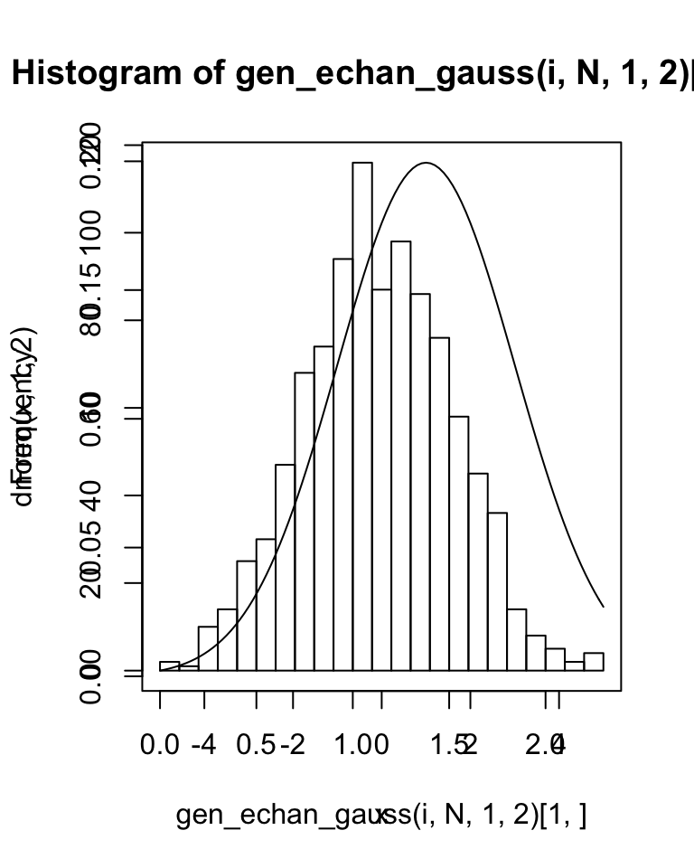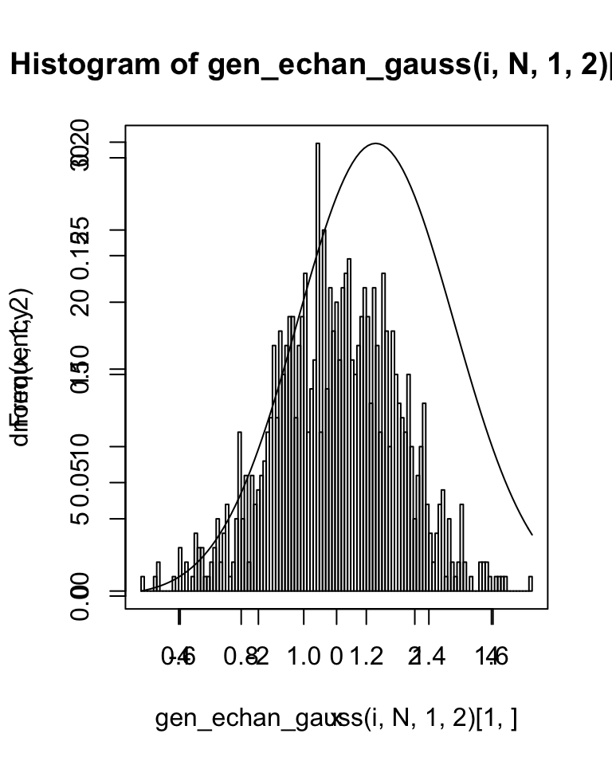
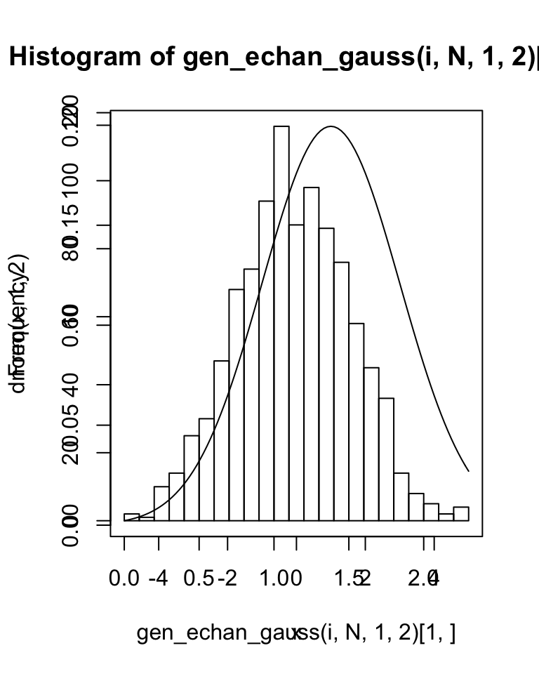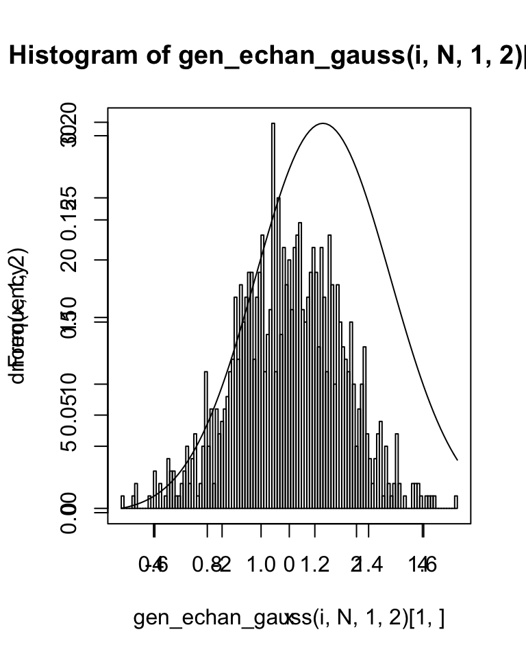
Soit \(S_{n}=\sum\limits_{i=1}^{n}X_{i}\) tq : \(X_{i}\) i.i.d en loi de moyenne \(\mu\) et variance \(\sigma^{2}\).
D’après le théorème centrale limite, comme \(N\) est assez grand, on en déduit que \(S_{n}\) peut être approchée une loi normal \(\mathcal{N}(n\mu,n\sigma^{2})\).
On pose : \({X_{n}} = \frac{S_{n}}{n}\) Ainsi, pour la moyenne : \(\mathbb{E}[ X_{n}]=\mathbb{E}[\frac{S_{n}}{n}]=\frac{1}{n}\mathbb{E}[S_{n}]=\frac{1}{n}\sum\limits_{i=0}^{n}\mathbb{E}[X_{i}]=\mathbb{E}[X_{i}]\) De même pour la variance : \(\mathbb{V}[{ X_{n}}]=\mathbb{V}[\frac{S_{n}}{n}]=\frac{1}{n^{2}}\mathbb{V}[S_{n}]=\frac{1}{n^{2}}\sum\limits_{i=0}^{n}\mathbb{V}[X_{i}]=\frac{1}{n}\mathbb{V}[X_{i}]\)
Dans le cas de la question 1. on a : \(\mathcal{N}(1,2)\) On note, avec les notations de l’énoncé, \((a_{n},b_{n})=(\mathbb{E}[X_i],\sqrt{\frac{1}{n}\mathbb{V}[Xi]})=(\mu,\sqrt\frac{\sigma^{2}}{n})\) Ce qui donne pour le cas présent : \((1,\frac{2}{\sqrt{n}})\)
Ainsi, on en déduit que \(U_{n}=\frac{{X_{n}} - a_{n}}{b_{n}}\) suit une loi normale centrée réduite \(\mathcal{N}(0,1)\).
#Fonction que trace l'histogramme pour la loi centrée réduite. Pour varier, j'ai utilisé ici une autre manière de créer un échantillon.
moy_norm_hist <- function(law,title){
for (j in n){
sample <-law(j*N)
Xn <- moy_empirique(sample)
Un <- c()
for (i in 1:N){
sample2 <- sample[((i-1)*j + 1): (i*j)]
ani <- moy_empirique(sample2)
bni <- var_empirique(sample2) / sqrt(j)
Uni <- (Xn - ani)/ bni
Un <- c(Un,Uni)
}
hist(Un, xlab=paste("Moyenne empirique centrée réduite pour une taille=",j),main=title,breaks=j)
}
}
mean(gen_echan_gauss(100,1000,1,2))## [1] 2.493762#moy_empirique(gen_echan_gauss(10000,10000,1,2))
moy_norm <- function(n,N,mu,sigma){
Xn <- gen_echan_gauss(n,N,mu,sigma)[1,]
Un <- c()
for (i in Xn){
an <- mu
bn <- sqrt(sigma*sigma/n)
Un <- c(Un,(i-an)/bn)
}
return(Un)
}
#hist(moy_norm(1000,10000,1,2),breaks=100)
#moy_norm_hist(function(n) {return (rnorm(n , mean=1, sd=2))},"Distribution gaussienne N(1,2)")
#t <- seq(-10,10,by=0.5)
#x <- dnorm(t)
#par(new=TRUE)
#curve(dnorm(x),-3,3)On obtient bien une loi centrée reduite. On remarque que plus n est grand plus la loi suivi ce rapproche de la loi centré réduite.
1.2 Loi de Pareto
Soit \(X\) une variable aléatoire suivant une loi de Pareto \(\mathcal{P}(a, \alpha)\),où \(\alpha > 2\). Alors, \(\mathbb{E}[X]=\frac{\alpha \times a}{\alpha - 1}\) et \(\mathbb{V}[X]=(\frac{\alpha \times a}{\alpha - 1})^2\frac{\alpha}{\alpha - 2}\) On cherche encore une fois à appliquer le théorème centrale limite afin de mettre en avant que la loi de pareto peut-être approchée par un loi normale centrée réduite : On a déja une expression de l’espérance : \(\mathbb{E}[X_{i}]=\frac{\alpha\times a}{\alpha - 1}=a_{n}\) Pour l’expression de \(b_n\), on a : \[b_{n}=\frac{\sigma}{\sqrt{n}}=\frac{\sqrt{\mathbb{V}[X_{i}]}}{\sqrt{n}}=\frac{\frac{\alpha\times a}{\alpha - 1}\frac{(\alpha)^{1/2}}{(\alpha - 2)^{1/2}}}{\sqrt{n}} \]
Plus n est grand, plus la loi moyenne empirique renormalisé semble suivre une loi N(0, 1).
library("rmutil")##
## Attaching package: 'rmutil'## The following object is masked from 'package:tidyr':
##
## nesting## The following object is masked from 'package:stats':
##
## nobs## The following objects are masked from 'package:base':
##
## as.data.frame, unitsgen_echan_pareto <- function(n,N,a,alpha){
x <- rpareto(n,a,alpha)
aleatoire <- function(x1,n1){
y <- sample(x1,n1,replace=TRUE)
moy_sd <- c(moy_empirique(y),var_empirique(y))
return(moy_sd)
}
result <- sapply(1:N,function(w) aleatoire(x,n))
return(result)
}
hist_mul <- function(n){
for (i in n){
hist(gen_echan_pareto(i,N,1.0,2.5)[1,],breaks=i)
t <- seq(-10,10,by=0.5)
x <- dnorm(t,1,2)
par(new=TRUE)
plot(x)
}
}
gen_echan_law_norm <- function(law,a,alpha){
for (i in n){
SampleMeans <- sapply(1:N,function(i) moy_empirique(sample(law(i),n,replace=TRUE)))
Un <-c()
an <- (a*alpha)/(alpha-1)
bn <- an*sqrt(alpha/(alpha-2))
Un <- (SampleMeans - an)/bn
hist(Un,prob=TRUE,xlab="moyenne",breaks=i)
curve(dnorm(x,0,1),add=TRUE,col="blue",-5,5)
}
}
l<-c(1000)
gen_echan_law_norm(function(l) {return (rpareto(l,1,3))},1,3)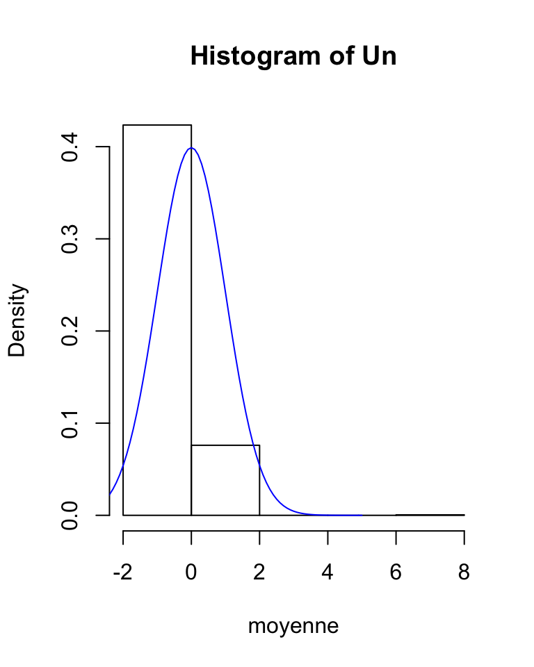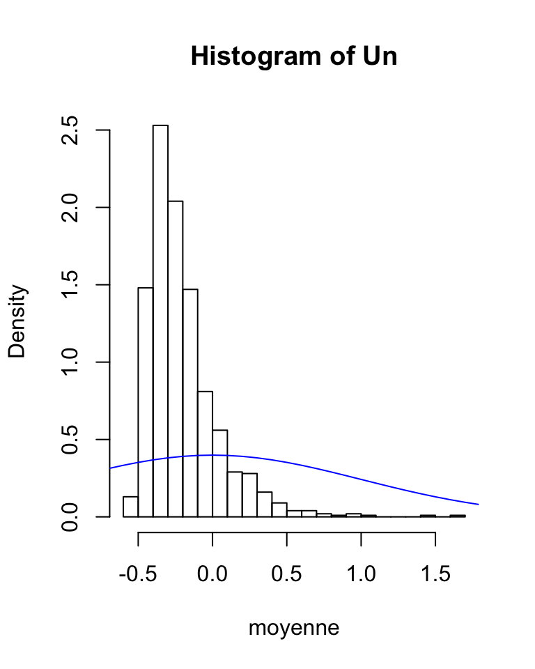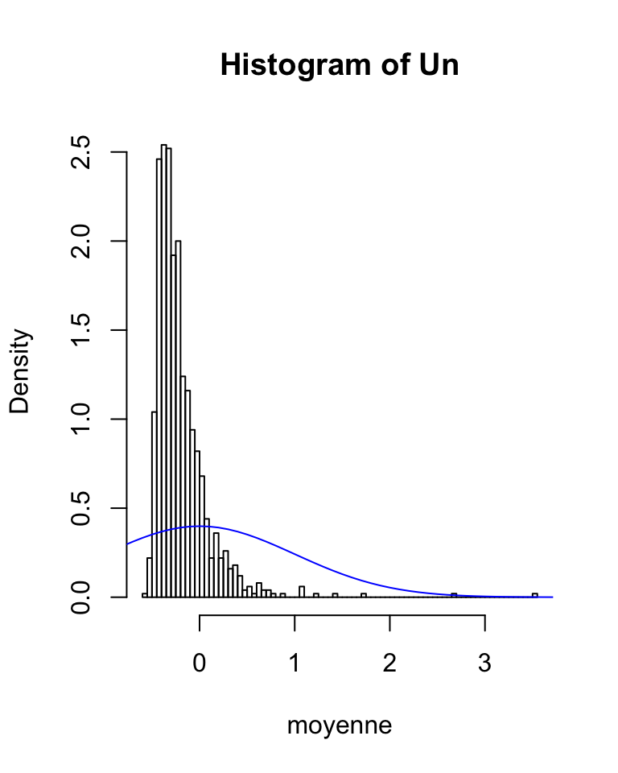
#hist_moy(function(n){return (rnorm(n,mean=1,sd=2))},"Distribution Gausienne N(1,2)")
#moy_norm_hist(function(n) rpareto(n,1,2.5),"AAA")
#hist_mul(n)
moy_norm_pareto <- function(n,N,a,alpha){
Xn <- gen_echan_pareto(n,N,a,alpha)[1,]
Un <- c()
#an <- mean(Xn)
#bn <-sqrt(sd(Xn))
an <- alpha*a/(alpha-1)
bn <- (alpha*a)/(alpha-1)*sqrt(alpha/(alpha-2))/sqrt(n)
for (i in Xn){
Un <- c(Un,(i-an)/bn)
}
return(Un)
}
hist(moy_norm_pareto(100,1000,1.0,3),breaks=100)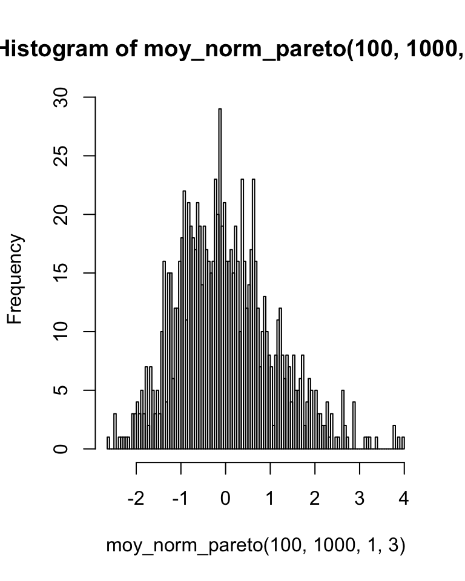
1.3 Loi de Poisson
Soit X une variable aléatoire suivant une loi de Poisson qu’on notera \(\mathcal{P}(\lambda)\). Alors, \(\mathbb{E}[X]=\lambda\) et \(\mathbb{V}[X]=\lambda\) On cherche de nouveau à impliquer le théorème centrale limite : On a alors rapidement : \(a_n=\lambda\) et \(b_n=\sqrt{\frac{\lambda}{n}}\)
Comme pour les questions précédentes, on remarque que plus n est grand, plus la loi moyenne empirique normalisé semble suivre une loi N(0, 1).
gen_echan_poisson <- function(n,N,lambda){
x <- rpois(n,lambda)
aleatoire <- function(x1,n1){
y <- sample(x1,n1,replace=TRUE)
moy_sd <- c(mean(y),sd(y))
return(moy_sd)
}
result <- sapply(1:N,function(w) aleatoire(x,n))
return(result)
}
hist_mul <- function(n){
for (i in n){
hist(gen_echan_poisson(i,N,1)[1,],breaks=i)
t <- seq(-10,10,by=0.5)
x <- dnorm(t,1,2)
par(new=TRUE)
plot(x)
}
}
#hist_moy(function(n){return (rnorm(n,mean=1,sd=2))},"Distribution Gausienne N(1,2)")
#hist_mul(n)
gen_echan_law_norm <- function(law,lambda){
for (i in n){
SampleMeans <- sapply(1:N,function(w) moy_empirique(sample(law(i),n,replace=TRUE)))
Un <-c()
an <- lambda
bn <- lambda/sqrt(i)
Un <- (SampleMeans - an)/bn
hist(Un,prob=TRUE,xlab="moyenne",breaks=i)
curve(dnorm(x,0,1),add=TRUE,col="blue",-5,5)
}
}
gen_echan_law_norm(function(n) {return (rpois(n,3))},3)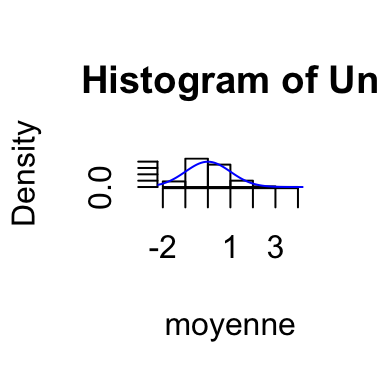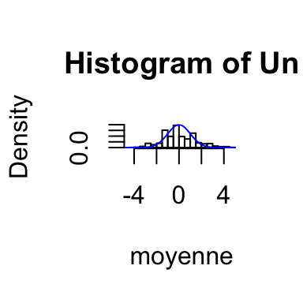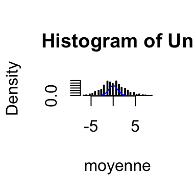
moy_norm_poisson <- function(n,N,lambda){
Xn <- gen_echan_poisson(n,N,lambda)[1,]
Un <- c()
an <- mean(Xn)
bn <- sqrt(sd(gen_echan_poisson(n,N,lambda)[,1]))
for (i in Xn){
Un <- c(Un,(i-an)/bn)
}
return(Un)
}
#hist(moy_norm_poisson(100,1000,1),breaks=100)1.4 Méthodologie d’estimation
Soit \(X=(X_1, ..., X_n)\), où \(n \in \mathbb{R}\), un échantillon. De plus, on suppose que tous les \(X_{i}\) son i.i.d de même loi.
Soit \(T : \Omega^n \rightarrow \mathbb{R}\) statistique sur un echantillon de taille n.
Pour trouver une approximation, on fait : 1. Soit \(N \in \mathbb{N}\) tq \(N \gg 1\) et soit \(N\) échantillons de taille n, notés \(X^i = (X^i_1, ..., X^i_n)\) tel que \(1 \leq i \leq N\) On introduit :$ T_{N} = _{i=1}{N}{T(X{i})} $ D’après le théorème centrale limite, on en déduit que lorsque N devient grand alors: D’une part, on a : \(\mathbb{E}[ T_N] \xrightarrow[N \gg 1]{} \mathbb{E}[T(X)]\) et, d’autre part, on a aussi : \(\mathbb{V}[ T_N] \xrightarrow[N \gg 1]{} \frac{1}{N}\mathbb{V}[T(X)] \xrightarrow[N \rightarrow +\infty]{} 0\) Avec ce qui précéde, on a finalement $ T_n{ [T(X)] = c^{te}}$.
N influence a qualité de l’approximation dans le sens où, comme observé dans les précédentes question, plus il est grand plus celle-ci est de bonne qualité.
2. Moyenne et dispersion
2.1 Inégalité de Tchebytchev
On considère une variable aléatoire X qui admet un moment d’ordre 2. On a alors l’inégalité bien connu : \[\forall \delta > 0, \mathbb{P}(|X-\mathbb{E}[X]|\geq\delta)<\frac{\mathbb{V}[X]}{\delta^{2}}\]
Dans le cas d’une loi Gaussienne, on a alors : \[\forall \delta > 0, \mathbb{P}(|X-\mu|\geq \delta)<\frac{\sigma^{2}}{\delta^{2}}\] Dans le cas d’une loi de Poisson, c’est : \[\forall \delta >0, \mathbb{P}(|X-\lambda|\geq \delta)<\frac{\lambda}{\delta^{2}}\]
2.2 Monte-Carlo
2.2.1
On a immédiatement que \[\mathbb{P}(|X-\mu|\geq\delta)=\mathbb{E}[\mathbb{1}_{|X-\mu|\geq\delta}]\] On pose alors \[Z=1_{|X-\mu|\geq\delta}\]
2.2.2
Par hypothèse N est supposé grand, on peut alors en réutilisant les conclusion de la partie 1, estimer \(\mathbb{E}[Z]\) par la moyenne empirique : \[Z_{n}= \frac{1}{n}\sum\limits_{i=1}^{n}T(Z^{i})\]